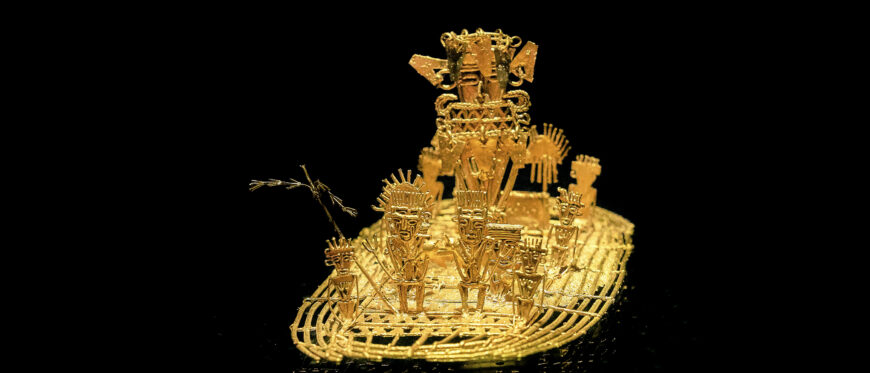

THE GILDED MAN
He was a ritual — a Muisca zipa covered in gold dust, once — and then the Spanish heard about it, and four centuries of expeditions, maps, and corpses gilded the story until the story stood up and started spending.

THE GILDED MAN
He was a ritual — a Muisca zipa covered in gold dust, once — and then the Spanish heard about it, and four centuries of expeditions, maps, and corpses gilded the story until the story stood up and started spending.
Feature map
Level-by-level features, as the figure refined them.
Dust of Guatavita
Bonus action · 1 CE.
Tier IV · Greed blaster/controller · suggested CE ability CHA · Primary verb: Price. Gold is not wealth. Gold is agreement. The Gilded Man treats value as a curse vector: what he gilds becomes valuable, what is valuable can be priced, and what is priced obeys the market. Gilded. As a bonus action (1 CE), you touch a creature or object within 5 ft — or fling gold dust at a creature within 30 ft — and it becomes Gilded (Charisma saving throw against your technique save DC negates; objects don't save). A thin shine coats it. While Gilded: your attacks and damaging effects against it deal additional force damage equal to your proficiency bonus; and you always know its direction and distance while it remains Gilded. Gilding lasts 1 minute, or until you dismiss it (no action). A creature can bear only one coat of Gilding at a time.
You apply Gilding as described above. (The ritual took an afternoon. The expeditions took four centuries. The touch takes a second.)
Appraisal
Passive.
You learn the surface wants of any Gilded creature you can see — what it most desires right now, in a word or two (the sword, the promotion, the exit). This is not mind reading; it is assaying. A creature that wants nothing — truly nothing — reads as blank, and you cannot Appraise it. (An assayer does not ask the ore's opinion.)
The Raft
Bonus action · 2 CE.
You step onto the market's current: teleport up to 30 ft to an unoccupied space adjacent to a Gilded creature or object you can see. (Gold moves. So does he.)
The Highest Bidder
Passive.
When you damage a Gilded creature, you may deepen the gilding instead of dealing the bonus force damage from Gilded: the target advances one Gild Stage (I → II → III). Gild Stages reset when Gilding ends. - Stage I — Valuable: as Gilded. - Stage II — Priced: the creature has disadvantage on saving throws against your technique features. - Stage III — Sold: once per turn, you may issue the creature a one-word command as a bonus action (drop, kneel, halt, turn). It obeys — or refuses, and takes 4d10 psychic damage (the market collects). The command cannot force it to harm itself directly. (Refusal is possible. Refusal has a cost. Everything does.)
Gild the Wound
Passive.
When you roll initiative, one creature you can see of your choice begins the encounter at Gild Stage I (no save — the market had already priced it before the fight started; this does not count as applying Gilding for Appraisal purposes until you touch it). Additionally, your Gilding ignores cover — gold dust drifts around corners. (He was pricing you before you arrived.)
The City
Action · 6 CE · 1 minute (concentration).
Gold leaf spreads across the ground in a 30-ft radius centered on you, moving with you. The area is difficult terrain for hostile creatures. As a bonus action on your turns, you may use The Raft to any Gilded surface inside the radius without spending CE. Hostile creatures that start their turns inside the radius must succeed on a Charisma save against your technique save DC or become Gilded. (The city was never a place. It was a condition.)
Everything Has a Price
Action · 8 CE · once per long rest.
You offer one creature you can see within 60 ft a bargain, spoken aloud: name what it will give (an object, an action, a memory — concrete and immediate) and what it will receive (healing, information, a Trophy-grade boon — also concrete). If it accepts, Heaven witnesses the exchange: both sides are bound, and neither can willingly undo their part for 24 hours. If it refuses, it is Marked: for 1 minute, your Gilding ignores its resistances and immunities to being Gilded (it still saves normally), and your bonus force damage against it is doubled. A creature that cannot understand you is unaffected. (The market does not compel. The market quotes.)
Maximum, Domain, or equivalent.
Capstone material.
The Lake Returns
The offering, reversed: spectral gold-dust water floods a 40-ft radius centered on a point you can see within 90 ft. Each hostile creature inside must make a Charisma saving throw against your technique save DC: on a failure it becomes Gilded at Stage II; on a success it becomes Gilded at Stage I. The area becomes difficult terrain until the end of your next turn. (The zipa cast gold into the water. He calls the water up.)
Guatavita: The Raft at the Center
The lake at dawn. The raft at its center. Inside this domain, the sure-hit is Everything Shines — at initiative 20, every hostile creature inside becomes Gilded (no save; the sure-hit lands — though a creature may instead take 3d10 force damage to tarnish itself and refuse the coat until the next initiative 20, a willing-decline valve Heaven honors). Additionally, while the domain stands, your one-word commands under The Highest Bidder may be issued as a free action once per round, and Stage III commands may be two words. (Inside Guatavita, the market is the only law — and the highest bidder is always him.)
- Clash points
- 800
- Burnout
- 5 rounds
- Duration
- 2 minutes
- Radius
- 50-ft radius
- Activation ✦
- full-turn action
- CE cost ✦
- 20
✦ Canon: figure Domains are Specific Domains — the stated profile governs, not the player point-unlock table.
The Mint
You spend four centuries of compounded greed at once: choose one — (a) every hostile creature you can see within 120 ft becomes Gilded at Stage I (Charisma save negates); or (b) you mint coin: create up to 5,000 gp worth of cursed gold coins that are yours — you always know their location, and anyone carrying them counts as carrying a Gilded object for your Raft and Appraisal. The coins are real gold and spend normally. (The treasury was never the point. The circulation is the point.)
Build-defining options.
This technique grants Innate Technique Feats — hand-authored applications of the figure's art, available in the builder's feat picker when you select this technique.
Edge cases and shared systems.
Campaign canon notes